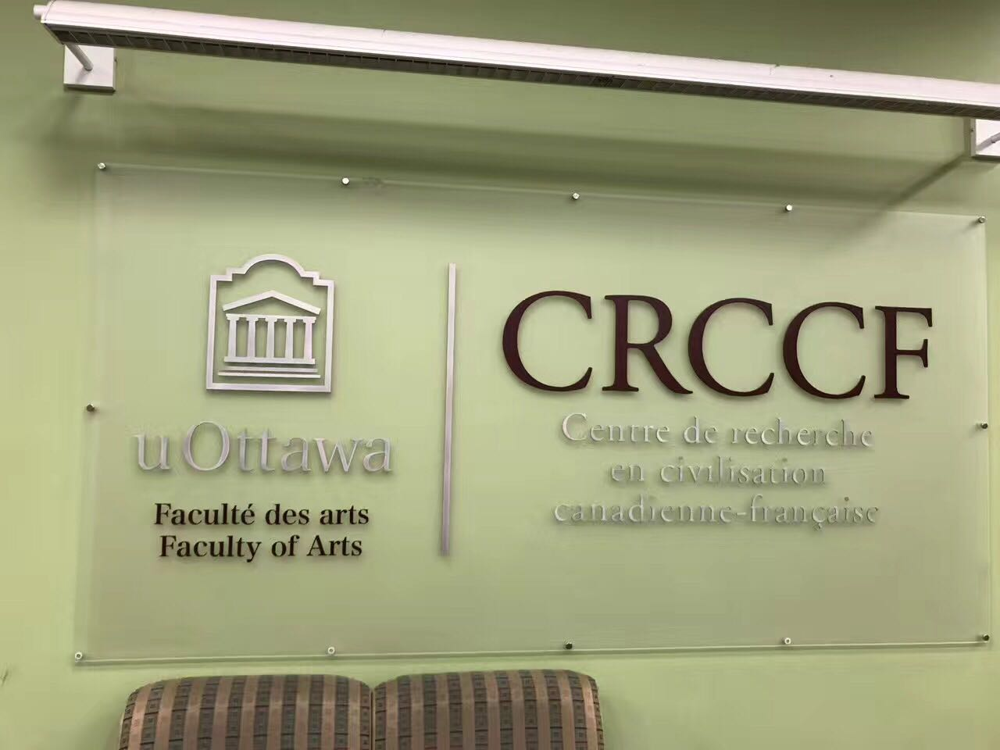
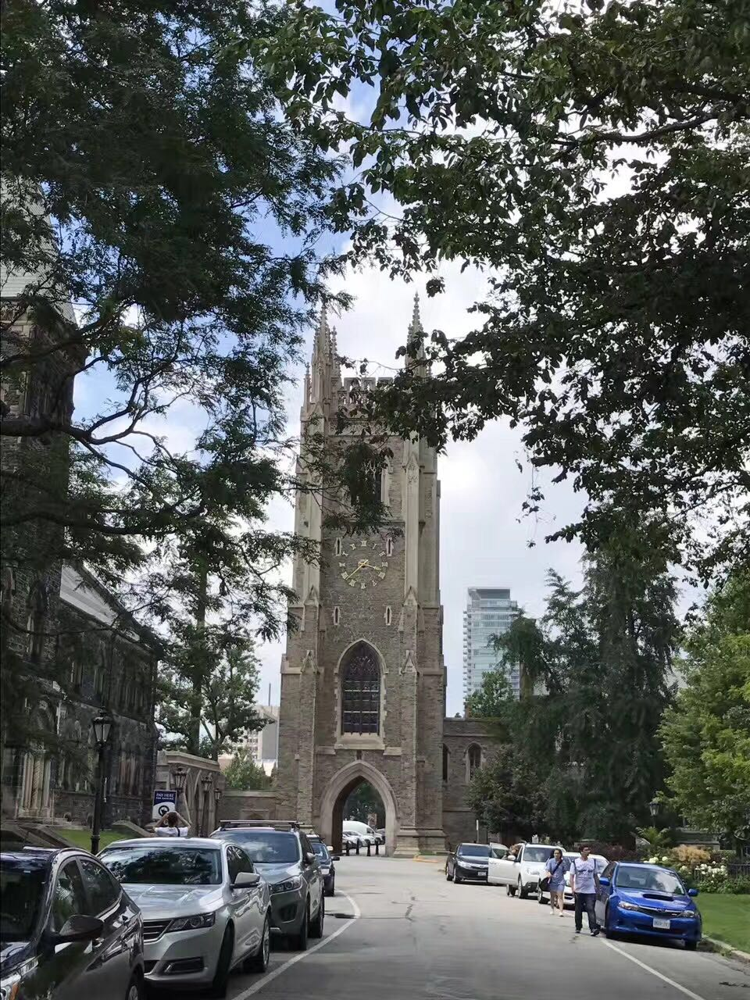
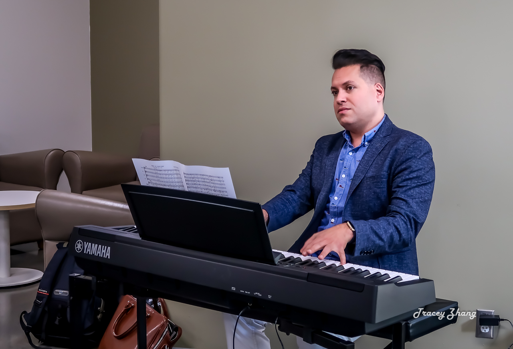

With the joint support of the Canadian National Innovation Foundation, the Ontario Government Innovation Trust Fund, the University of Ottawa and private funds, the University of Ottawa formally established a world-class piano teaching laboratory in 2005-the Canadian Piano Teaching and Research Comprehensive Laboratory.
The laboratory is positioned for cross-research and cooperation in piano teaching and education, cognitive science, psychology, neuroscience, audiology, health science, engineering, information technology and medicine. There are five sub-centers under the laboratory: Sylva M. Gelber Studio, Ann Southam Multimedia Control Center, Piano Remote Experimental Classroom, Harpiano Experimental Classroom, and Resource Center.
After 13 years of development, the laboratory currently has a core research team composed of 30 professors and 18 PhD and master students from different majors and universities, and has developed into the primary authority specializing in piano teaching and research.
The training and a series of international exchange activities designed for domestic piano teachers aim to learn, experience and practice internationally through the rich research atmosphere of the Canadian piano education comprehensive laboratory, and through targeted and innovative customized training and exchange activities. The leading piano education method effectively improves the professional skills of piano teachers, enhances teaching experience, broadens the thinking of piano and music education, and encourages more educators to contribute to the improvement of Chinese youth music literacy.
  Gilles Comeau received his Ph.D. in the Foundations of Music Education in 1995 from the University of Montreal. There he continued his Post-Doctoral studies in piano pedagogy from 1995-1997 with Marc Durand and Gilles Manny. Currently a Professor in the School of Music of the University of Ottawa, he co-ordinates both the piano pedagogy and the music education sectors. He has been the beneficiary of many research grants, including grants from the Canadian Foundation for Innovation and Ontario Innovation Trust to establish a 1.2 million dollar research laboratory in piano pedagogy. As head of this infrastructure, he has set up many multidisciplinary research groups, all studying various aspects of piano learning and piano teaching. He has authored many books including Piano Pedagogy: A Research and Information Guide Comparing Dalcroze, Orff and Kodàly and the five books in the Illustrated History of Music for Young Musicians series. He is also the author of over 20 educational kits to be used by music and art teachers, and has written various research papers in music education and piano pedagogy.
Dr. Donald Russell is an Associate Professor in the Department of Mechanical and Aerospace Engineering at Carleton University in Ottawa. Originally from Halifax, he completed his Ph.D. in Mechanical Engineering in the area of arm biomechanics at the Massachusetts Institute of Technology in 1990. Dr. Russell’s contributions to the piano pedagogy laboratory are in the areas of limb biomechanics and piano mechanics with a particular focus on the interaction between the finger and the key. He is active in biomedical engineering research and has current projects in prosthetic limb development and cardiovascular system dynamics. Dr. Russell has both an Associate and Choir Master Diploma from the Royal Canadian College of Organists, is active as a substitute organist and choir director in the Ottawa area.
Rafik Goubran is a Professor and Dean of the Faculty of Engineering and Design at Carleton University. As a leading expert in digital signal processing and its applications in biomedical engineering, he has 10 patents. He has led many research projects focusing on sensors, microphone arrays and the design of smart home independent living environments for seniors. Dr. Goubran is a research scientist at the Bruyère Research Institute, and co-leader of the Technology Assisted Environment for the Third Age project.
Dr Amineh Koravand is an associate professor in the Audiology and Speech-Language Pathology program of the School of Rehabilitation Sciences, Faculty of Health Sciences at the University of Ottawa. Having earned a bachelor’s degree in Audiology in Tehran (Iran) and a Master’s degree from the Université de Montréal, she completed a doctorate in biomedical sciences with a specialization in Audiology and Neuro-Audiology at the CHU Ste-Justine Research Centre as an award recipient of the Fonds de recherche en santé du Québec (FRSQ).
Prof. Koravand's research deals with the relationship between the peripheral and central auditory systems in children. Her goal is to develop neurophysiological measures (biological neuromarkers) to assess the central auditory processing at subcortical and cortical level of children during early childhood, to prevent disorders while brain plasticity is still significant. Moreover, her lab focuses mainly on applying Event Related Potentials (ERPs) combined with behavioral assessments to study plasticity in auditory neural pathways resulting from musical training, singing lessons, bilingualism, multilingualism as well as various auditory-speech deficits.
Professor Huta obtained her Ph.D. in clinical psychology at McGill University. At the University of Ottawa, she teaches graduate and undergraduate statistics and the occasional course on positive psychology. Her research compares different ways of defining and pursuing the good life, e.g., eudaimonia (the pursuit of excellence, virtue, personal growth), and hedonia (the pursuit of pleasure, enjoyment, comfort). She studies these pursuits in relation to personal well-being (most notably meaning, feeling of elevation, and connection with oneself), the well-being of the surrounding world (pro-social, pro-community, and pro-environmental behavior), cognitive and physiological responses, and predictors (e.g., parenting styles, worldviews). She is a founder of the Canadian Positive Psychology Association, serves on the editorial board of the Journal of Happiness Studies, and co-organized the first cross-disciplinary conference on eudaimonia.
| Day | Activities | Master Speaker | Location |
|---|---|---|---|
| Day 1 | Opening Ceremony | Frieman Hall | |
| Piano history and development, piano education, learning and performance lectures | Professor Gilles Comeau | Perez Hall, room 109 | |
| Student assessment and placement | Piano Lab | ||
| Piano Education Lectures and Q&A | Ms. Lu Yuanyuan | Piano Lab | |
| Observe the master class for university students who major in piano in Canada | Professor David Jabert | Frieman Hall | |
| Day 2 | Lectures in respective classes | TBD | Perez Hall, room 109, 113 |
| Observe the master class for university students who major in piano in Canada | Professor Leopard Erice | Frieman Hall | |
| Day 3 | Lectures in respective classes | TBD | Perez Hall, room 109, 113 |
| Day 4 | Lectures in respective classes | TBD | Perez Hall, room 109, 113 |
| Day 5 | Lectures in respective classes, prepare for final recital performance | TBD | Perez Hall, room 109, 113 |
| Recital Performance | All teachers, students & parents | Teberate Hall | |
| Students visit the piano laboratory | Piano Lab | ||
| Closing ceremony | Professor Gilles Comeau, Ms. Lu Yuanyuan | Piano Lab |
| Time | Sunday | Monday | Tuesday | Wednesday | Thursday | Friday | Saturday |
|---|---|---|---|---|---|---|---|
| 9:30-10:45 | Arrival & Check-in |
Opening ceremony Meeting the instructor Receiving information |
Piano education lecture | Theory course | Piano education lecture | Theory course | Rest: Free time Short trips |
| 10:45-11:15 | Recess | ||||||
| 11:15-12:30 | Professor Comeau's Themed lecture | Piano education lecture | Theory course | Themed seminar | Theory course | ||
| 12:30-13:30 | Lunch | ||||||
| 13:30-15:30 | Familiarizing with the University of Ottawa campus | Discussion class of practical topics | Demo lesson | Piano education thematic workshop | Classroom observation | ||
| Evening | |||||||